Performance endpoints:
| Probe | Success? | Criterion | Actual |
|---|---|---|---|
COMPOSITE_TIME |
✅ | Median per-user fraction of slow frames < 0.5% (absolute) | 0.16% slow |
CONTENT_FRAME_TIME_VSYNC |
✅ | ≤ 5% regression in median of per-user fraction of slow events | 1.7-3.9% regression |
CONTENT_FULL_PAINT_TIME |
✅ | ≤ 5% regression in median fraction of slow paints (> 16 ms) | 44.8-46.4% improvement |
CONTENT_FULL_PAINT_TIME |
❌ | ≤ 5% regression in median of per-user means | 8.7-9.9% regression |
FX_PAGE_LOAD_MS_2 |
✅ | ≤ 5% regression in median of per-user means | No difference |
FX_TAB_SWITCH_COMPOSITE_E10S_MS |
✅ | ≤ 5% regression in median of per-user means | 2.1-2.7% improvement |
Stability endpoints:
| Endpoint | Success | Criterion | Actual |
|---|---|---|---|
| Overall crash reports | ❌ | ≤ 5% increase in crash rate | 6% increase in crash rate |
| OOM crash reports | ✅ | ≤ 5% increase in crash rate | 20% decrease in OOM crashes |
CANVAS_WEBGL_SUCCESS |
✅ | ≤ 5% regression in median of fraction “True” per user | No difference |
DEVICE_RESET_REASON |
✅ | ≤ 5% increase in reset rate | 70% decrease in device resets |
The higher crash rate in the WebRender branch is attributable to an increase in the rate of GPU process crashes. Main and content process crash rates fell.
Retention and engagement metrics were not strongly affected, though week 1 retention was 0.06%-0.45% lower in the WebRender branch.
1 Introduction
WebRender is a new technology for getting webpages onto the screen using a GPU. In this experiment, we enabled WebRender for users in the Firefox 66 release channel running Windows 10 with certain GPU chipsets.
We have been running a separate ongoing experiment in the beta and nightly channels to guide development, observing how performance changes on a build-by-build basis. This report does not describe that work.
2 Results
2.1 Performance
Before computing results for performance endpoints, user sessions were filtered to ensure that the compositor for the telmetry session matched the enrolled branch. The first telemetry session after a user enrolled was dropped for users in both branches, because the user needs to restart the browser after enrolling for WebRender to be enabled. (The enrollment session was chosen by identifying the session containing the lowest profile_subsession_counter for each client_id.) Users who unenrolled from the experiment were excluded after unenrollment.
This avoids a minimizing bias that could result from contaminating the results for the treatment branch with results from users that were not exposed to the treatment. The approach may overestimate the actual effect of WebRender on the population if a non-random set of users (e.g. users with poor performance) were more likely to unenroll from the experiment, but this is unlikely because unenrollments were rare, and balanced between the experiment and control branches (see “Enrollment” below)
2.1.1 Continuous endpoints
| Metric | Median per-user mean, as WR % of Gecko | 95% CI (low) | 95% CI (high) |
|---|---|---|---|
| content_full_paint_time | 109.39 | 108.89 | 109.92 |
| page_load_ms | 100.44 | 99.93 | 100.96 |
| tab_switch_composite | 97.60 | 97.30 | 97.88 |
Median per-user mean values of content_full_paint_time were about 10% higher in the WebRender case. Page load times did not change. Tab switch time decreased a little more than 3%.
The distribution of each metric will be discussed in the following subsections, which is a pattern that will continue in this report.
2.1.1.1 Content paint time
WebRender users tended to have a somewhat higher average CONTENT_FULL_PAINT_TIME, though WebRender users were less likely to have slow (> 16 ms) events (below).
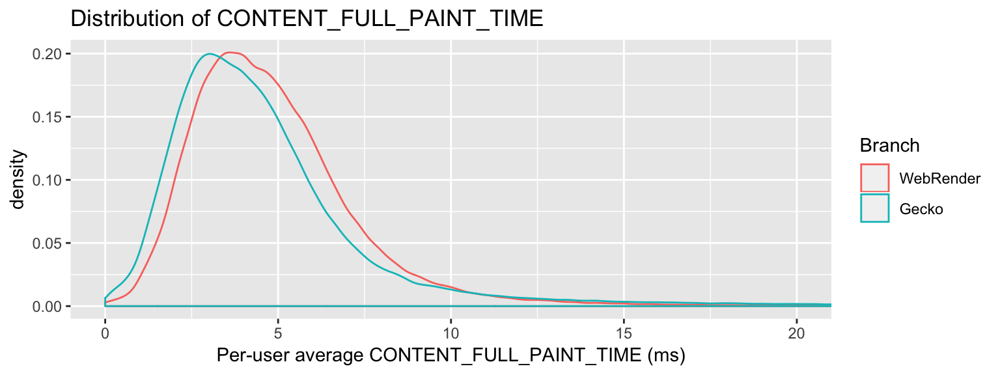
2.1.1.2 Page load time
The per-user-mean page load time distributions were essentially identical between WebRender and Gecko users.
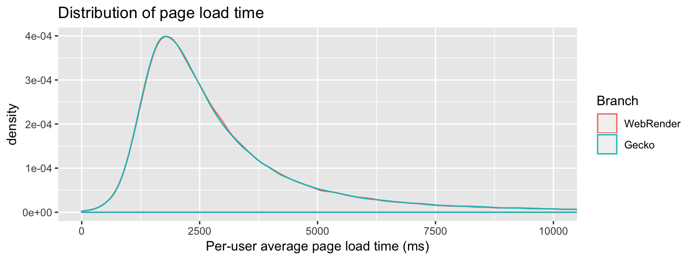
2.1.1.3 Tab switch time
The median per-user average tab switch was slightly faster with WebRender. The fastest tab switches took longer with WebRender enabled, but the slowest tab switches took less time.
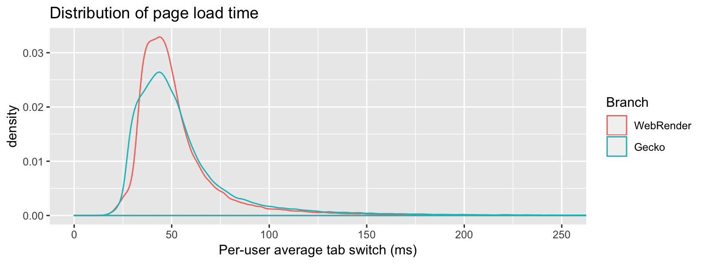
2.1.2 Thresholded absolute endpoints (composite time)
The criterion for COMPOSITE_TIME was that the median per-user slow fraction should be < 0.5%.

The median fraction of slow composites is much higher in the WebRender branch compared to the Gecko branch, but lower than the 0.5% threshold:
| Branch | Median per-user slow composites (percent) | 95% CI (low) | 95$ CI (high) |
|---|---|---|---|
| WebRender | 0.1610 | 0.159 | 0.1628 |
| Gecko | 0.0152 | 0.015 | 0.0153 |
2.1.3 Thresholded comparative endpoints
| Metric | Median per-user fraction, as WR % of Gecko | 95% CI (low) | 95% CI (high) |
|---|---|---|---|
| content_frame_time_vsync (> 200) | 102.97 | 101.94 | 104.14 |
| content_full_paint_time (> 16) | 54.37 | 53.59 | 55.32 |
The mean per-user fraction of slow content_frame_time_vsync events was 2-4% higher in the WebRender branch.
The mean per-user fraction of slow content_full_paint_time events was about halved in the WebRender branch.
2.1.3.1 Content frame time
The median WebRender and Gecko user experienced very similar fractions of slow CONTENT_FRAME_TIME_VSYNCs (> 200% vsync).
The fraction of slow frames was somewhat higher for the slowest half of WebRender users than it was for the slowest half of Gecko users.
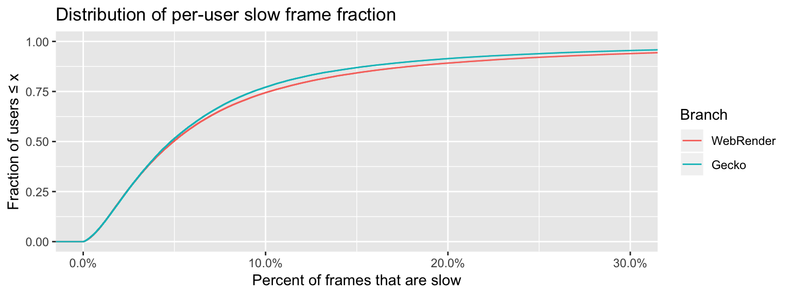
2.1.3.2 Content paint time
The median WebRender user experienced considerably fewer slow paints (> 16 ms) than the median Gecko user.
The worst-performing 20% of users in the WebRender and Gecko branches had similar slow paint fractions.
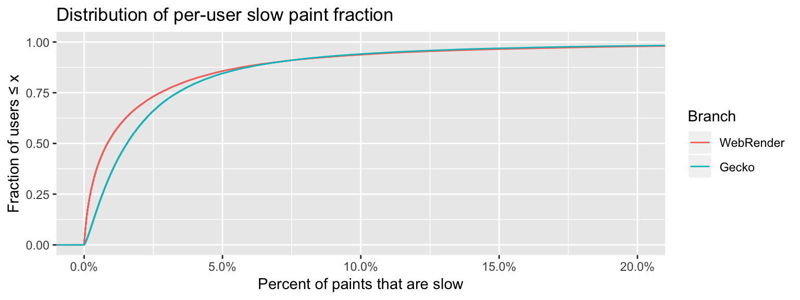
2.2 Stability
Sessions were filtered for stability in the same manner as for performance.
Despite a clear increase in GPU process crashes, the overall crash rate was only slightly higher because the number of main and content process crashes fell.
2.2.1 Overall crash reports
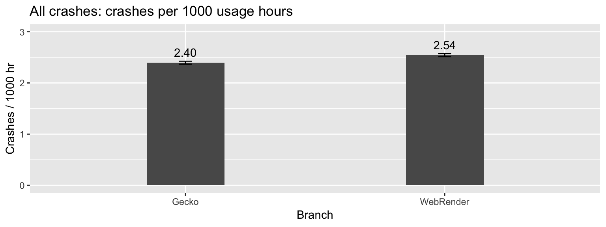
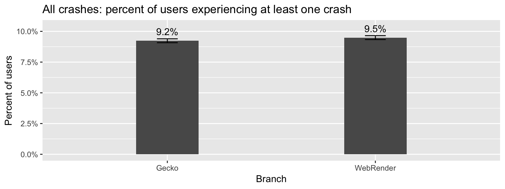
2.2.2 Per-process crash reports
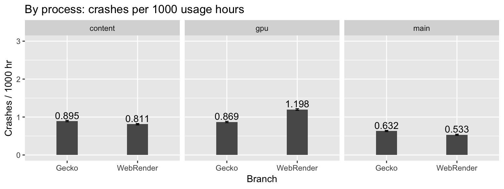
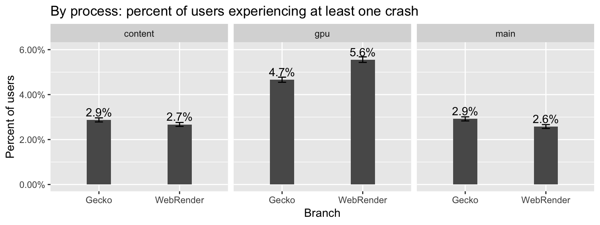
2.2.3 OOM crash reports
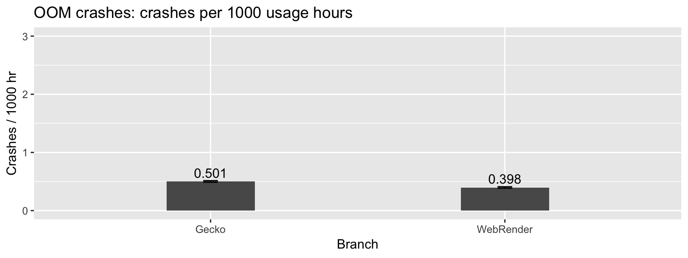
OOM crashes are a subset of main process crashes. They were less common in the WebRender branch.
2.2.4 WebGL canvas construction
Failure to create a WebGL canvas was rare in either branch. This is reflected in the per-user average fraction of canvas creation successes:
| branch | average_success_fraction |
|---|---|
| Gecko | 0.9996119 |
| WebRender | 0.9996374 |
2.2.5 Device resets
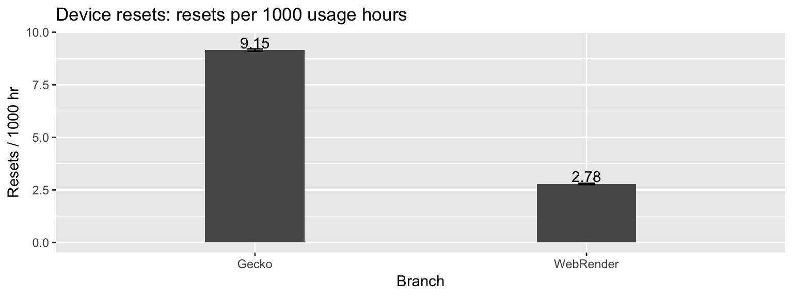
2.3 Engagement
Retention and engagement metrics were observed for all enrolled users from the moment of enrollment; filtering was not performed to ensure that the compositor matched the enrolled branch, and enrollment sessions were not discarded.
2.3.1 URI count
Total URIs visited in each branch were indistinguishable.
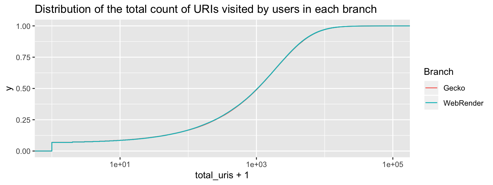
Computing bootstrapped 95% confidence intervals for the difference between the distributions along the curve, the intervals all contain zero:
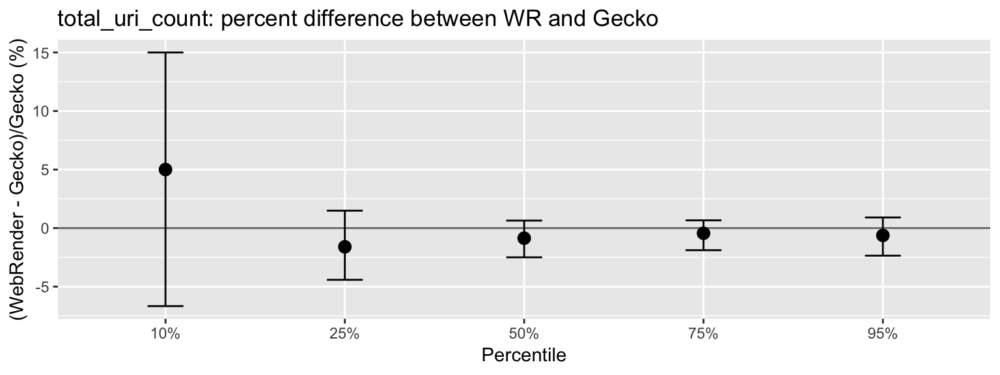
2.3.2 Active time
The distribution of per-user active time was similar between branches:
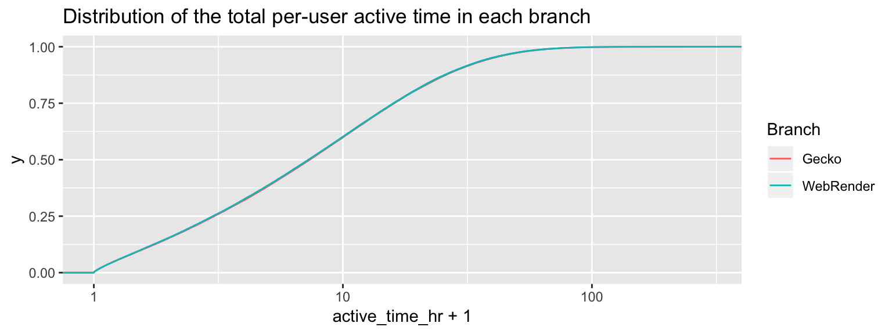
Active time may have decreased slightly for WebRender branch users among less avid users.
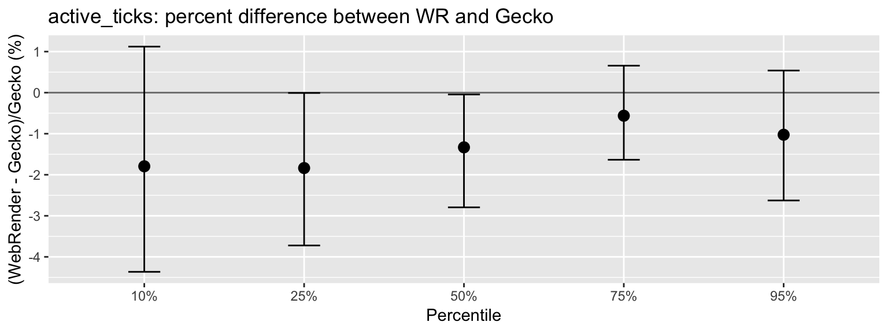
2.3.3 Total time
Distribution of total browser-open time was similar between branches.
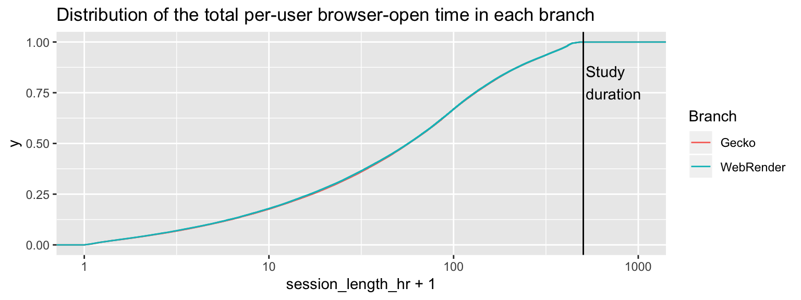
Similar to active time, less-avid users may have used the browser slightly less in the WebRender branch.
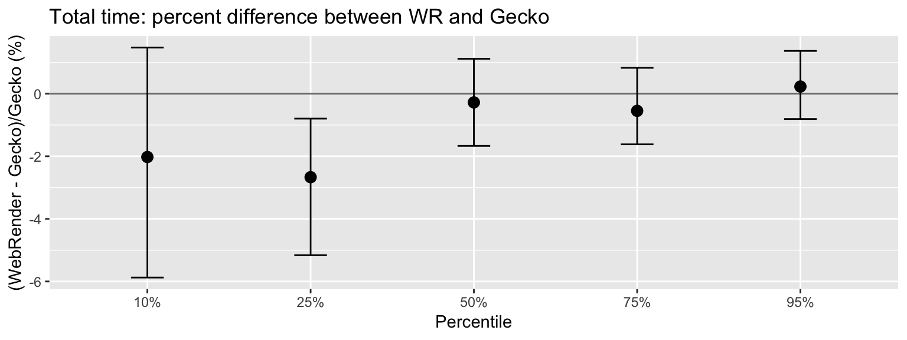
2.4 Retention
Retention was similar between the study branches.
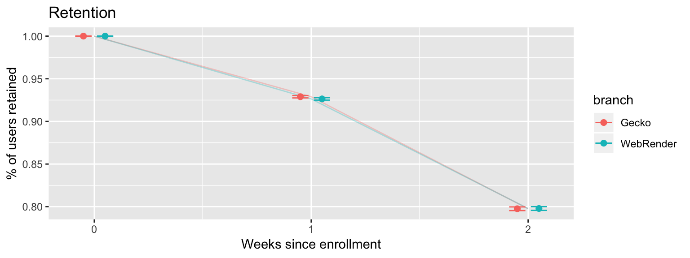
Retention was slightly lower for the WebRender branch at 1 week but not 2 weeks. The 95% confidence interval for the true difference between the branches was at least 0.06% and at most 0.45%.
2.5 Enrollment
Daily enrollment and unenrollment were symmetric between branches.
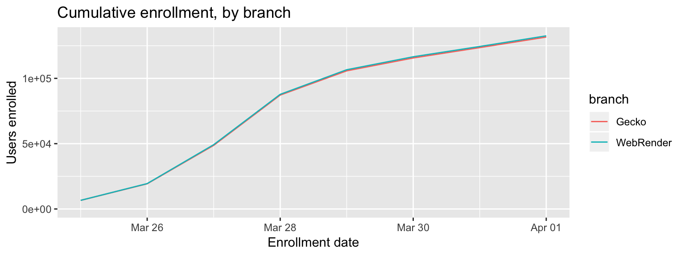
Unenrollments were minimal and distributed equally between branches.
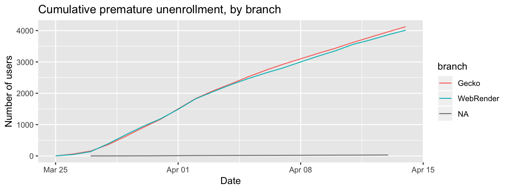
3 Conclusions
- The WebRender experiment met all but one of the performance goals. Although the median per-user mean
CONTENT_FULL_PAINT_TIMEincreased, the number of measurements greater than 16 ms (=1/60 Hz) actually decreased. Because most users have a 60 Hz refresh rate, this may not be a generally user-visible regression. - The WebRender experiment had generally salutary effects on stability, except for an increase in GPU process crashes. Main process and content process crashes, which are more visible to the user, decreased.
- The WebRender experiment did not have clear impacts on user engagement or retention.
4 Methods
The webrender-performance-66 experiment enrolled users in Firefox 66 who met the normandy.telemetry.main.environment.system.gfx.features.wrQualified.status == 'available' criterion. At the time of the study, this enrolled users running Windows 10 on systems without a battery and having one of a list of whitelisted graphics cards.
ETL was computed by two notebooks: